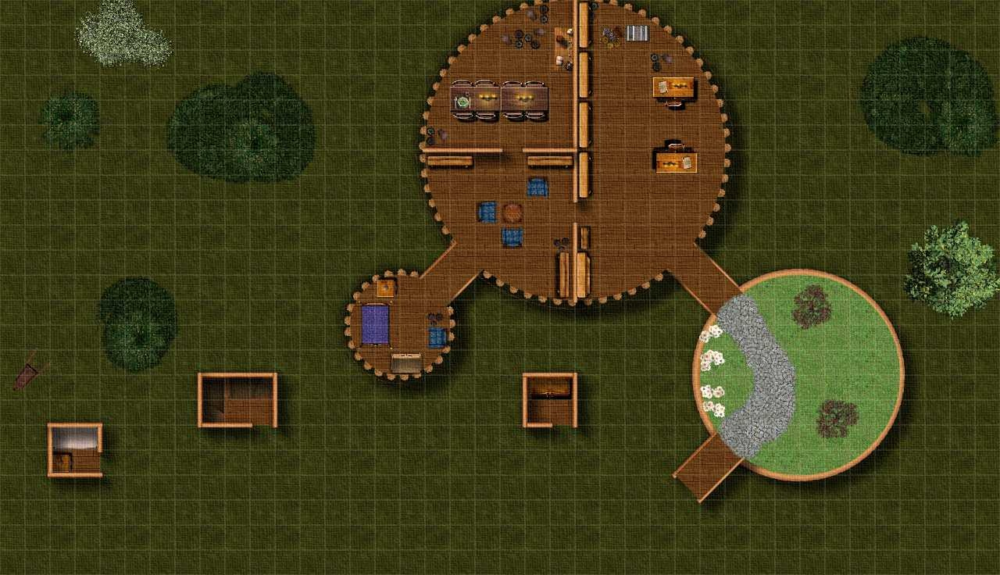
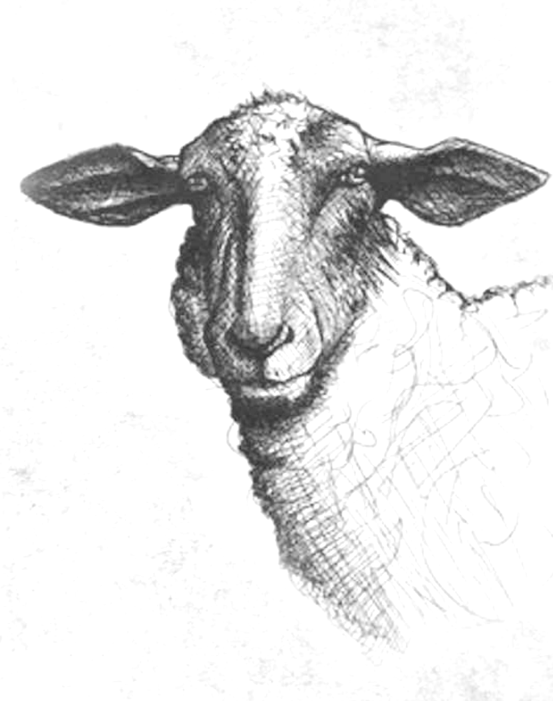

玩家队伍本想抓住难得的午后休整时光，却被一头慌不择路的绵羊打断——它嘴里衔着动物交谈卷轴，执意要引起他们的注意。在魔法的帮助下，这头生物显露出真身：他并非野兽，而是一名法师，被心怀怨恨的学徒和一根被盗的完全变形术法杖所害。
在被囚禁的两年里，这位前精灵除了自家草坪几乎无物可吃。如今他终于逃了出来，亟需援助。被变形的刺客正想拿他做一顿羊肉晚餐，而唯一能让他重新长出对生拇指的东西，就掌握在他昔日的学生、如今的死敌手中。幸运的是，这位毛茸茸的法师已经找到了可以依靠的新盟友，对吧？
英雄们能否终结艾哈迈德·诺克的变形暴政，让一位无辜的法师恢复真身？只有一个办法能知道……
正文分为若干独立场景，每个场景涵盖一个地点、一次遭遇或一个主要剧情节点。玩家通常有多种方式推进故事，但这些方式并非穷举。其他信息、敌人数据块和备注以灰底方框标出。
其后附有地图、详细的角色描述和角色扮演提示。
虽然即兴主持亦可，但建议你在开始游戏前通读整篇冒险。
让玩家进入这场冒险非常简单：他们只需身处一座大到足以容下一位法师的城镇，走在街上即可。若想提前埋下伏笔，你可以通过流言，或店主、旅店老板的闲谈引出诺克这个人物——他们提起他时既畏惧又敬畏。
游戏从队伍消磨一个下午开始。他们也许正在酒馆小酌，在据点休息，或只是无忧无虑地沿街散步。然而无论身在何处，他们很快就会发现有些不对劲。
一阵杂乱的蹄声、惊叫声和疯狂的咩咩声传来。队伍还没来得及反应，一头绵羊便朝他们奔来。这头野兽看上去与普通绵羊毫无二致——雪白的绒毛、黑色的脸、卷曲的角——但它嘴里衔着一张精致的卷轴。
绵羊试图靠近队伍中魔法天赋最高的人，朝对方挥动卷轴；若有人伸手，它便让对方拿走。
蜡封表明这是一张动物交谈卷轴（修改版）。若某名角色大声说出这一点——比如向其他队员解释——绵羊似乎会热切地点头并咩咩叫。
若他们使用卷轴（只需念出内容即可启动法术），所有人都会听到绵羊的咩叫瞬间变成有教养的精灵口音通用语，只是仍带着一丝羊叫的尾音。
确认玩家能听懂后，绵羊自我介绍为范席尔·夏恩布莱特，一名急需帮助的法师。若玩家愿意听，他解释说自己认出他们是冒险者，而自己迫切需要他们的帮助。具体来说，他希望他们从一名危险、可能已经发疯的法师手中夺回一件极其强大的魔法器物。
他正要讲述自己的故事，但刚开口不久，空中便响起了嚎叫声……
直到两年前，范席尔·夏恩布莱特还拥有并经营着镇郊的一座塔楼。他是一位颇有天赋的法师，专精变化系魔法。他最珍视的财产——或许也是他成功的关键——是一根极其稀有的完全变形术法杖，他曾用它为当地官员、贵族和商人创造了许多奇迹。
然而，在一个决定性的夜晚，他从冥想中醒来，发现自己的学徒艾哈迈德·诺克站在身旁，紧握着法杖。夏恩布莱特质问他到底在做什么，但自己能发出的唯一声音只有愤怒的一声“咩——”。一切都已经太迟了。
法杖是他唯一的得救希望，这位法师因此成了自家花园里的囚徒。他被迫只能吃草和毛茛，而饥饿的狼群和其他野兽——实际上是被变形术变成的守卫——在旁监视。
昨晚，诺克离家时没有关门，夏恩布莱特数月来第一次看到了希望。他溜了进去，找到一座旧书架，偷走了动物交谈卷轴。随后他咬着卷轴冲进镇里，拼命寻找能启动法术的魔法灵光，终于找到了队伍。
为什么找我们，而不找当局？
谁会相信一头绵羊的话，而不信一位受人敬畏的法师？
动物交谈不是只能持续 10 分钟吗？
这张卷轴使用的是夏恩布莱特修改过的法术版本，最长可持续八小时。
你为什么需要法杖？别的法师不能把你变回去吗？
完全变形术是九环法术。除非冒险所在的城镇拥有一所极负盛名的魔法学院，否则附近极不可能有人能施展它。
若队伍在公共场合，一个巨大的半兽人会大摇大摆地朝他们走来，毫不在意地推开人群，身后留下一片愤怒的叫骂。
若他们在据点或任何私密场所，他便改为猛砸房门。
他身边跟着三头戴着项圈的狼（《怪物图鉴》第 341 页），它们的眼神异常聪慧；还有一个披着肮脏棕色斗篷、至少八英尺高的魁梧身影。
半兽人古兹要求他们把“诺克大人的绵羊”交出来。他说它逃跑了，对他的主人具有极大的“感——情——价——值”。任何提及夏恩布莱特真实身份的话，都只会换来空洞而毫无笑意的笑声。
古兹不聪明，但他非常忠诚，决心完成任务。无论队伍把夏恩布莱特藏得多好，他的追踪者都知道他在这里，而且他不会接受“不”这个答案。虽然他更倾向于用暴力和恐吓解决问题，但如果看起来更划算，他也愿意行贿并许诺魔法恩惠。
若他觉得进展不顺，古兹会毫无预警地动手。狼群会跟着他冲上来，而披斗篷的身影会掀开兜帽，露出它其实是一头被变形术变成的棕熊（《怪物图鉴》第 319 页）。
护甲等级 14（皮甲）
生命值 67（9d8 + 27）
速度 30 尺
| 力量 | 敏捷 | 体质 | 智力 | 感知 | 魅力 |
|---|---|---|---|---|---|
| 16 (+3) | 12 (+1) | 17 (+3) | 8 (−1) | 11 (+0) | 8 (+1) |
技能 威吓 +2
感官 被动感知 10
语言 通用语、兽人语
挑战等级 2（450 XP）
鲁莽。古兹可以在自己回合内选择让所有近战武器攻击获得优势，但作为交换，直到他下个回合开始前，所有针对他的攻击检定也获得优势。
回旋巨剑。近战武器攻击：命中 +5，触及 5 尺，两个目标。命中：10（2d6 + 3）挥砍伤害。
任何战斗的具体细节都取决于地点。若发生在旅店，桌椅翻倒，满地狼藉；若发生在街上，你可以让惊慌的路人形成困难地形区域。
所有这些野兽体内都保留着有智慧的人类心智，会聪明地行动。古兹乐于冲上前线，与棕熊并肩对付任何硬骨头。
与此同时，狼群会试图绕到队伍后方抓走夏恩布莱特（使用矮种马的数据（《怪物图鉴》第 325 页），但智力和感知分别为 18 和 14）。它们想活捉夏恩布莱特，而非杀死他。
诺克的爪牙被击败、引开或以其他方式解决后，夏恩布莱特会向队伍恳求。没有他们的帮助，他就完了。诺克还有许多守卫仍在为他效力，他们迟早会找到他。
若队伍流露出雇佣兵式的态度，他会提醒他们：自己的真身是一位强大而富有的法师，并许诺丰厚的报酬。他非常乐意承诺一些他明知自己无法兑现的交易。
无论如何，要变回原形，夏恩布莱特需要再承受一次完全变形术——这意味着他必须拿回自己的旧法杖。
这头绵羊解释说，他的前学徒仍住在他的旧宅里，就在镇子东南方。诺克随身携带法杖，除非万不得已绝不离开。夏恩布莱特对旧宅的布局了如指掌（见场景三），并且非常乐意事无巨细地描述。
若古兹抓住了他，古兹和同伙会动身前往诺克的家。队伍必须决定是否跟上去，这可能会引发一场追逐戏。
通往诺克塔楼的小径在镇外几英里处从大路岔开，从灌木丛的缝隙间钻出去。这是一条被踩得很实的小路，很快便在高大的橡树之间蜿蜒穿行。
任何愿意检查小径足迹的人都能轻易看出，许多脚和爪子留下了印痕，其中最新的足迹似乎与古兹率领的那伙人吻合。
小径穿过稀疏的林地，约有一英里不见人烟。除非队伍知道该找什么，否则当夏恩布莱特的旧宅从树梢间出现时，他们可能会被眼前的景象吓一跳。
夏恩布莱特没有用石头或玻璃，而是用四棵粗壮橡树的活枝搭建了自己的家。这些枝条被塑形、编织，形成三层厚实的平台。
最低的平台直径约 40 尺，离地约 10 尺。唯一明显的上行路线是一条由树根和枝条形成的缓坡，大致与主路相连。
构成平台底部的枝条呈碗状；从地面望去，可以看到平台边缘生长着花朵和小树。其余部分是一座花园，草坪修剪整齐，一条石径将其一分为二。
中间的平台最大，直径约 60 尺，离地约 20 尺，四周完全被枝条围合，顶部以编织的细枝为顶。平台上有约十二个均匀分布、窗户大小的开口，在离花园平台最近的位置还有一扇看似门的东西。
说出通行口令后，枝条会生长并连接花园平台，形成入口。口令是“Mae Tref Cathode”，这是夏恩布莱特祖宅在当地土语中的名字。桥梁可从两端启动。
平台内部一分为三：一间兼作图书馆与实验室的房间、一间起居室，以及一间餐厅兼厨房。外墙上排着凌乱的书架，工作台上堆满了溅上墨水的笔记和各类野兽、怪物的复杂解剖图。夜里，壁灯上的魔法灯会散发出温暖的光。
最后、也是最高的平台离地约 30 尺，可从第二个平台经另一条枝条坡道抵达。它直径只有约 15 尺，是诺克的卧室，里面除了一只衣柜、一张大木床和一张堆满杂物的梳妆台外，几乎别无他物。
平台下方散落着两间小屋，显然也是用魔法木材搭成，另有一座大户外厕所。小屋里各有一两张床，其中几张尺寸过大，还堆着居住于此的普通人的日常杂物。
诺克生性多疑，而夏恩布莱特最近的逃跑更是让他的处境雪上加霜。因此，把他从塔楼的安全处引出来极其困难——但并非不可能。
诺克对名望和权力的渴望，暂时略胜于他对被推翻的恐惧。这意味着，一伙非常非常擅长撒谎、计划足够阴险、运气又足够好的家伙，也许能用一份格外显赫、利润丰厚的合约诱他上钩。
即便如此，诺克离开时也会带上所有剩余的保镖；只要有一丝背叛的迹象，他都会立刻怀疑队伍。
当然，他会随时把法杖带在身上。若有足够时间施法，诺克会消耗一发完全变形术充能，把附近的某件物品变成一只雏龙，其数据大致与床龙雏龙相同（见第 5 页）。取决于物品的材质，它可能不具备相同的特性，其抗性和易伤也许需要稍作调整。
队伍抵达宅院时，草坪上有两头狼正在睡觉，或用一对过大的骰子玩耍，用爪子在一块石板上记分。一头棕熊正在户外厕所里“办事”。
诺克会在中央平台里埋头研究新法术。若他发现队伍靠近，会命令他们：“把绵羊还回来，作为回报，我不会把你们全部消灭。”
若他们开口交谈，他会说出自己憎恨夏恩布莱特的理由，并语无伦次地吹嘘自己的成就。他还会问他们有没有杀掉“我的人，古兹”，若答案是肯定的，他会明显很不高兴。
若他们无视他的恳求、命令和贿赂，拒绝交还夏恩布莱特，他便下令手下进攻。
这场战斗最关键的人物是诺克：他的攻击能力很弱，却能大幅强化盟友。棕熊从厕所出来后，他会对它施放变巨/缩小术（《玩家手册》第 237 页），以提高其伤害。他还会用冷冻射线（《玩家手册》第 271 页）补充手下的伤害，但仅此而已，因为他会专注于维持专注。
两头狼会聪明地行动，游走攻击施法者和其他脆弱目标，而棕熊则堵住通往诺克的上行路线。不过，这些被变形的守卫不太可能死战到底；一旦生命值降到一半以下，它们就会逃跑。
一旦战局明显失利，或玩家靠得太近，诺克会施放加速术（《玩家手册》第 250 页）或撤离术（《玩家手册》第 238 页），逃进中央平台，反锁房门并收起桥梁。他会尽快赶到卧室，对床——他能找到的最大的东西——施放完全变形术。
他逃跑三轮后，会骑着床龙雏龙从卧室屋顶破顶而出。这头野兽看起来像一条用木头雕成的龙，鼓胀的床单是翅膀，尾巴末端是一只柔软的枕头。若队伍在主起居区，他会撞穿天花板发起攻击。
雏龙不太聪明，会尽可能频繁地使用木屑吐息；吐息不可用时，就攻击最近的目标。不过，它会优先攻击对自己使用火焰的敌人。骑在雏龙背上时，诺克只会用冷冻射线减缓试图撤退的队伍成员。
护甲等级 16（天生护甲）
生命值 70（10d8 + 20）
速度 30 尺，攀爬 30 尺，飞行 30 尺
| 力量 | 敏捷 | 体质 | 智力 | 感知 | 魅力 |
|---|---|---|---|---|---|
| 19 (+4) | 14 (+2) | 17 (+3) | 8 (−1) | 8 (−1) | 4 (−3) |
技能 感知 +2，隐匿 +5
感官 被动感知 12
伤害易伤 火焰
语言 —
挑战等级 4（1,100 XP）
啃咬。近战武器攻击：命中 +6，触及 5 尺，一个目标。命中：15（2d10 + 4）穿刺伤害。
木屑吐息（充能 5-6）。床龙雏龙喷出一片木屑，覆盖 15 尺锥形区域。该区域内的每个生物必须进行一次 DC 13 敏捷豁免，失败受到 24（7d6）穿刺伤害，成功则伤害减半。
若雏龙被击败——无论是因为受伤，还是因为诺克失去专注——它会变回一张普普通通的旧床。
诺克绝望而不愿让老师赢，会语无伦次地试图对自己使用法杖，想把自己的形态变成某种怪物。然而，这根过度使用的法杖会噼啪作响、嘶嘶冒烟，伴随着一声巨响发生故障，把诺克变成一堆畸形的血肉。冒着热气、渗着黏液的那团肉会抽搐、呻吟片刻，随后，曾经是诺克的那堆残骸便瘫软下去，再也不会动弹。
虽然场景三列出的事件链涵盖了最可能的结果，但请记住，一切并非一成不变。
一支潜行队伍也许能在诺克睡着时偷走法杖；或者，幸运的掷骰加上富有创意的战术，也许能让玩家在法师来得及变形自己的床——更不用说他自己——之前夺下他的法杖。
若发生这种情况，不要硬把故事拉回上面所谓的“理想路线”，而应让它自然发展。冒险后面的角色描述应该能帮助你判断，诺克和夏恩布莱特面对面时会如何反应。
不过，有一件事你必须做：在玩家尝试使用改造过的法杖之前，至少给出一点关于它危险的暗示。也许角色一碰它，法杖就不自然地冒出火花，引起对杖身裂缝的注意；或者诺克本人出于荣誉感而警告他们。
护甲等级 12
生命值 35（7d8）
速度 30 尺
| 力量 | 敏捷 | 体质 | 智力 | 感知 | 魅力 |
|---|---|---|---|---|---|
| 9 (−1) | 14 (+2) | 16 (+3) | 16 (+3) | 12 (+1) | 10 (+0) |
豁免 智力 +5，感知 +4
技能 奥秘 +6
感官 被动感知 12
语言 通用语、精灵语、矮人语、龙语
挑战等级 2（450 XP）
施法。诺克是 7 级施法者。他的施法属性为智力（法术豁免 DC 14，法术攻击命中 +6）。他准备了以下法术：
戏法（随意）：冷冻射线、修复术、魔法伎俩、传讯术。
一环（四个法术位）：撤离术、跳跃术、雷鸣波。
二环（三个法术位）：变巨/缩小术、浮空术。
三环（三个法术位）：加速术、缓慢术。
四环（一个法术位）：变形术。
匕首。近战或远程武器攻击：命中 +5，触及 5 尺或射程 20/60 尺，一个目标。命中：4（1d4 + 2）穿刺伤害。

若玩家取回法杖，会立刻发现它已损坏。任何熟练于奥秘的人都能看出，它被改造过，可以更频繁地使用，但过度使用已使它极不可靠。
若他们想与夏恩布莱特交谈，只需在中央平台稍作搜索，就能找到另一张动物交谈卷轴。看到前学徒毁坏的尸体，夏恩布莱特甚至可能意识到自己曾多么苛待这个学徒，尽管胜利在握，也会变得黯然神伤。
夏恩布莱特愿意冒着生命危险变回精灵。不过，若队伍试图劝他放弃，他也愿意听取。
在接受法术风险之前，夏恩布莱特会请求队伍：若他真的死了，请给他的旧学院带个信。
若队伍决定继续施法并成功，夏恩布莱特会衷心祝贺队伍。但他需要被提醒自己还是绵羊时究竟许下过什么承诺，而且实际上付不出任何金钱报酬，因为诺克几乎破产，卖掉了大部分物品来支付研究材料和守卫的薪水。
不过，他愿意为队伍施展最高五环的变化系法术，只收取覆盖施法材料的费用。他也会收留那些逃跑的被变形守卫，承诺设法让他们恢复原形。
若队伍决定继续施法但失败，夏恩布莱特会永久死亡。队伍可以尊重他的遗愿，让塔楼基本保持完好，也可以尽情搜刮。然而，这座塔对非变化系法师来说出奇地空，值钱的东西仅限于昂贵的实验设备和奥术器具，估计价值约 1,000 gp。若玩家愿意，他们也可以把整座塔楼据为己有——不过，当当地贵族前来拜访诺克却发现他失踪时，这可能会带来麻烦……
若队伍拒绝施法，夏恩布莱特会接受，但不会完全放弃希望。他会收回旧宅，设法解除诅咒。无论如何，他都会去卧室，套上一件旧袍子，直到变回原形前都穿着它。尽管会对队伍不满，夏恩布莱特仍会承认自己欠队伍一个大人情。
这根法杖由一根从橡树上取下的细长枝条制成，存有 1d4 − 1 发完全变形术充能（最少 1 发）。任何具有施法属性、且至少花一小时与法杖同调的人都可以施展。充能数量每天黎明恢复。
为了增加法术的使用次数，法杖上似乎加装了一圈鼓起的、刻有符文的铁箍，杖身也布满了裂缝。
若以 DC 15 智力（奥秘）检定检查，会发现这些改造让法杖变得极不可靠。每次使用一发充能，使用者都必须通过 DC 17 智力（奥秘）检定。
若成功，法术正常施展，且使用它所需的 DC 永久增加 1。
若失败不超过 5 点，法术会把目标变成一团可怕的、由随机肢体、器官和面部特征拼凑而成的东西。它无法行动，1d4 轮后死亡，且不会恢复原形。这种变形无法被任何低于九环的法术解除，也不能通过结束专注取消。目标可以像对抗一次正常的完全变形术那样，对此效果进行豁免。
若失败超过 5 点，除上述后果外，法杖还会猛烈爆炸，对 10 尺内所有生物造成力场伤害，伤害值为法杖内剩余每发充能 1d12。法杖因此被摧毁。
自负、自恋、自我意识膨胀，范席尔·夏恩布莱特是最不适合被变成绵羊的人之一。然而，无论外形如何，这位前精灵法师总能散发出一股挑剔、书呆子气的知识分子气息。
若无人打扰，夏恩布莱特会滔滔不绝地谈论自己、自己的成就以及对奥术的研究。他惊人地无法察觉他人的需求或愿望，完全可能在不经意间毁掉友谊或职业关系。
尽管有这些缺点，他本质上心地善良。只要他注意到了，而且不会给他带来太大不便，他都会尽量帮助别人——不过会大声抱怨对方连“多平面交织理论”这样简单的概念都理解不了。
曾几何时，当地的贵族、商人和奥术师提起范席尔·夏恩布莱特的名字时，总是带着尊敬、敬畏和几分不情愿的钦佩。作为变化系大师，他经常被请去完成宏大的任务，比如把巨石变成兔子来清理堵塞的道路。
两年绵羊生涯并没让他学会多少谦逊，倒是对草了解了不少。
若恢复原形，夏恩布莱特是一位柳条般纤细的高等精灵，稻草色的头发，鼻子极长。他喜欢宽松的蓝色长袍，几乎总是穿着拖鞋。
诺克是铁匠最小的孩子，从小着迷于不同材料可呈现的暂时特性——前一刻还软如糖浆的金属，下一刻就能硬如岩石。
他 14 岁离家，去学习奥术变化系的奇迹，却发现学院并不能挑战他的能力。于是，他放弃奖学金，长途跋涉去拜访夏恩布莱特；后者同意收他为徒。
诺克曾把传奇的夏恩布莱特当作英雄来崇拜，但岁月一年年过去，两人的关系毫无改变。几十年过去，这位变化系大师仍把他当孩子看待，指望他做饭、打扫、死记硬背答案。当诺克追问时，夏恩布莱特会解释说，自己当年就是这么被教出来的，似乎完全没意识到诺克的抗议：作为一个人类，他不可能拿出一百年时间来当学徒。
与此同时，诺克开始意识到，夏恩布莱特的声望与其说来自他本人的能力——尽管确实渊博——不如说来自他手中的完全变形术法杖。
他终于在 40 岁生日那晚崩溃了。当时夏恩布莱特拒绝了他推进学业的请求，说他太年轻。把老师变形后，诺克开始以大师法师自居。然而，内疚与骤然释放的野心交织，令他的精神状态急剧恶化。他偏执地认为有人会像他袭击夏恩布莱特那样袭击自己，因此很少睡觉。这种偏执促使他豢养了一队守卫，其中许多人被他变形为更强壮、更兽性的形态。
开支不断上涨，诺克又一心想超越前老师的名声，因此热衷于承接更宏大的项目，哪怕这意味着把法杖逼到极限。
艾哈迈德是个身材较矮、肤色偏深的中年男子，头发花白而凌乱。他穿着夏恩布莱特旧的蓝色长袍，袍子被拙劣地改过，拖在地上。他有个紧张的习惯：压力大时会轻轻捏自己的左耳垂。

古兹是个魁梧粗野的半兽人，认为暴力和恐吓是实现目标的唯一合理手段，并以为大多数人也这么想。在多数旁观者眼中，他也许显得完全令人不齿，但他对诺克极其忠诚——诺克真心不在乎一个生物的外表——而他也对诺克报以毫不动摇的忠诚。
古兹不太聪明，容易被花言巧语的敌人绕晕，不过这通常只会让他更愤怒。他本人身高超过六尺，穿着破旧但干净的皮甲，挥舞一把巨大的巨剑，而且完全能单手使用。他的头发编成一条辫子，垂到后腰。他还喜欢使用从诺克那里学来的又长又复杂的词——至于他是否真的理解这些词的意思，那就见仁见智了。
关键特征：对诺克极其忠诚；以暴力和恐吓行事；模仿诺克，爱用长词；不太聪明。
封面图像取自暴雪娱乐制作的动画。地图使用 Pyromancer's Dungeon Painter（www.pyromancers.com）制作。龙与地下城为威世智（Wizards of the Coast）的财产。
关于本冒险的任何反馈，或你希望看到的其他冒险，可通过 Reddit 私信 u/TheRainyDaze，或发送邮件至 rjpwriting@gmail.com。